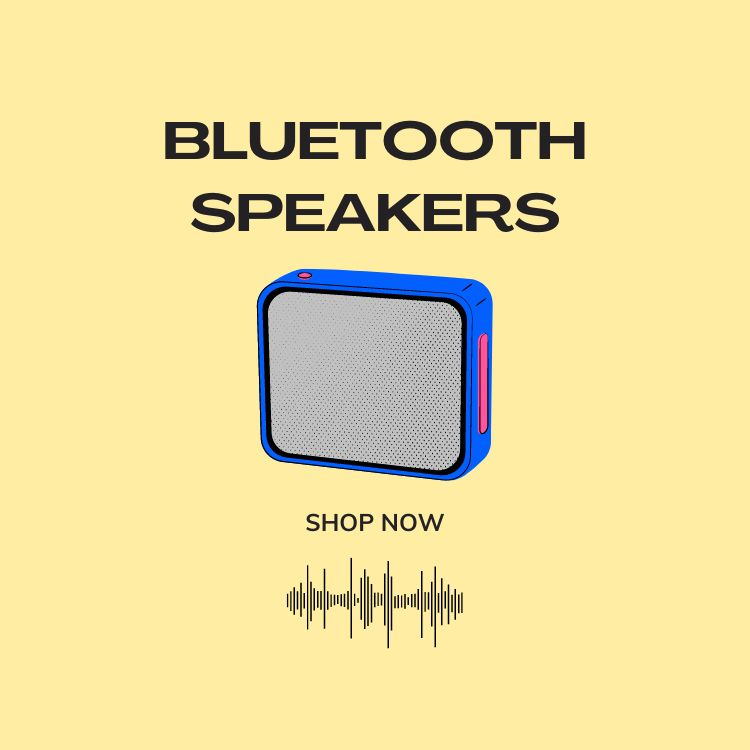

GoodBuy|Bluetooth speaker recommendations from Bose, Marshall, JBL, Sony, and UE.

Bluetooth speakers are extremely convenient audio devices that utilize Bluetooth technology to wirelessly connect with various Bluetooth-enabled devices such as smartphones, tablets, laptops, etc., allowing users to enjoy music without the need for any cables. Most Bluetooth speakers are designed to be lightweight and portable, making them ideal companions for outdoor activities, travel, or parties. Additionally, setting up Bluetooth speakers is straightforward, requiring only the Bluetooth device to be connected to the speaker to immediately start playing music. Bluetooth speakers typically also come with various features such as hands-free calling, built-in microphones, waterproof designs, etc., making them suitable for various situations and purposes.
Scenarios for Using Bluetooth Speakers
With the advancement of technology, people increasingly prefer to be free from the constraints of wires during activities. Therefore, Bluetooth speakers are highly suitable for various music listening occasions, especially in dynamic settings where a high-quality Bluetooth speaker is essential. Bluetooth speakers are particularly suitable for the following scenarios:
- Outdoor activities: Such as picnics, camping, hiking, or beach parties, where Bluetooth speakers can provide music entertainment, enhancing the atmosphere of the activity.
- Home gatherings: When hosting parties or family gatherings, Bluetooth speakers can easily provide music without the need to move sound systems outdoors or to inconvenient locations.
- Traveling: During travels, you can place Bluetooth speakers in hotel rooms to enjoy personal music time.
Well-Known Brands of Bluetooth Speakers
Well-Known Brands of Bluetooth Speakers Here are some well-known brands of Bluetooth speakers renowned for providing high-quality audio products:
- JBL: JBL is a renowned audio brand, and its Bluetooth speaker series is highly praised. JBL Bluetooth speakers typically offer excellent sound quality, durability, portability, and come in various styles and price ranges.
- Bose: Bose is another esteemed audio brand known for its Bluetooth speakers with outstanding sound quality and innovative designs. Bose Bluetooth speakers usually feature excellent sound quality, connectivity stability, and versatility.
- Sony: Sony is a well-known consumer electronics company, and its Bluetooth speaker series is also very popular. Sony Bluetooth speakers feature diverse functions, high-quality sound, durability, and relatively reasonable prices.
- Marshall: Marshall is a famous audio brand known for its Bluetooth speakers with classic rock music style and excellent sound quality. Marshall Bluetooth speakers are typically uniquely designed, visually appealing, and offer powerful volume and clear sound quality.
- UE (Ultimate Ears): UE is a brand focused on headphones and Bluetooth speakers, with its Bluetooth speaker series known for durability and waterproof performance. UE Bluetooth speakers are usually designed to be simple, durable, with excellent sound quality and waterproof performance, suitable for outdoor activities and travel use.
Buying Guide
- Sound Quality: Sound quality is one of the most important considerations when choosing Bluetooth speakers. Ensure that Bluetooth speakers provide clear, balanced sound that suits your music preferences. Bluetooth speakers typically use different audio codecs to compress and transmit audio, such as SBC, AAC, aptX, aptX HD, etc. Some codecs can provide higher sound quality, making them more popular among music enthusiasts.
- Output Power: Output power indicates the volume level and sound performance of Bluetooth speakers, usually measured in watts (W). Higher output power typically means louder volume and better sound performance.
- Connectivity Stability: Choosing Bluetooth speakers with good connectivity stability is crucial to ensure no disconnection or audio interruption issues during use. Newer Bluetooth versions typically offer better connectivity stability and performance.
- Waterproof Rating: The waterproof rating indicates a device’s resistance to water, usually indicated by IP ratings (e.g., IPX4, IPX7, etc.). Higher ratings indicate better waterproof performance, making Bluetooth speakers more suitable for outdoor or humid environments.
- Connection Range: Connection range indicates the maximum wireless connection distance between Bluetooth speakers and Bluetooth devices, usually measured in meters (m). A longer connection range means you can use Bluetooth speakers farther away from Bluetooth devices.
- Portability: Portability of Bluetooth speakers is another important consideration, especially if you plan to use them for outdoor activities or travel. Lightweight, portable Bluetooth speakers allow you to enjoy music anytime, anywhere.
- Battery Life: Considering the battery life of Bluetooth speakers is crucial, especially if you intend to use them outdoors for extended periods. Ensure that the battery life meets your usage needs, preferably with fast charging capabilities.
Below, the editor has carefully selected several sellers with relatively low prices and good sales volume. If you are interested in any of the products, you can directly click the links to purchase.
As an Amazon Associate, I earn from qualifying purchases.
Recommended Brand Bluetooth Speakers
- JBL FLIP6 Waterproof Bluetooth Speaker
- JBL GO3 Waterproof Bluetooth Speaker
- Marshall Willen Portable Bluetooth Speaker
- Marshall Emberton II 2nd Generation Bluetooth Speaker
- SONY SRS-XB100 Wireless Bluetooth Speaker
- UE WonderBoom 3 Waterproof Wireless Bluetooth Speaker
- Bose SoundLink Revolve II Bluetooth Speaker
- Bose SoundLink Micro Waterproof Bluetooth Speaker
JBL FLIP6 Waterproof Bluetooth Speaker

Features
- Newly upgraded dual speaker system: Equipped with high and low speakers, providing richer sound quality and stronger volume.
- Up to 12 hours of playtime: Sufficient battery life ensures continuous music playback without interruption.
- IP67 waterproof and dustproof design: Carry the speaker with confidence in any environment without worrying about water or dust intrusion.
- Waterproof Type-C interface: The interface is waterproof and emits a warning sound when water or other chemicals are detected, protecting the speaker’s connection port.
- Multi-speaker pairing: Can be paired with other JBL PartyBoost compatible speakers to achieve stereo effects and enhance the party atmosphere.
Specifications
- Battery charging time: 2.5 hours (5V/3A)
- BMusic playback time: Up to 12 hours (actual playback time depends on volume level and audio content)
- BBluetooth version: 5.1
- BDimensions (Width x Depth x Height): 178x72x68mm
- BNet weight: 550g
- Brequency range: 63Hz-20kHz
Purchase link (Taiwan Only):Buy Now
Purchase link on Amazon:Buy Now
JBL GO3 Waterproof Bluetooth Speaker

Features
- Original JBL Pro Sound: Featuring JBL’s professional audio quality.
- Cutting-edge style and ultra-portable design: With striking contemporary design and colorful fabric, featuring new tones and color combinations inspired by current street fashion trends, the JBL GO 3 not only sounds great but also catches the eye.
- IP67 waterproof and dustproof: With IP67-rated waterproof and dustproof functionality, you can confidently use it in any environment and enjoy music rain or shine.
- Wireless Bluetooth streaming: Supports Bluetooth wireless streaming, allowing easy connection to various Bluetooth devices.
- 5 hours of playtime: Equipped with a high-performance battery, providing up to 5 hours of music playback.
Specifications
- Battery charging time: 2.5 hours (5V/1A)
- Music playback time: Up to 5 hours (actual playback time depends on volume level and audio content)
- Bluetooth version: 5.1
- Dimensions (Width x Depth x Height): 87.5x75x41.3mm
- Net weight: 209g
- Frequency range: 110Hz–20kHz
Both the JBL GO 3 and JBL FLIP 6 are Bluetooth speakers from JBL, but they are designed for different user needs and usage scenarios. The FLIP 6 features a newly upgraded dual speaker system, offering richer sound quality and stronger volume, as well as multi-speaker pairing capability for a more immersive sound experience. The JBL GO 3, on the other hand, is a compact and portable Bluetooth speaker with IP67 waterproof and dustproof features, making it more suitable for outdoor use.
If you prioritize sound quality and wish to enjoy a richer music experience, and frequently host parties or outdoor activities, then the JBL FLIP 6 may be more suitable. If you prioritize portability and waterproofing, and often need to use it outdoors or while traveling, then the JBL GO 3 may better meet your needs.
Purchase link (Taiwan Only):Buy Now
Purchase link on Amazon:Buy Now
Marshall Willen Portable Bluetooth Speaker

The Marshall Willen portable Bluetooth speaker is your perfect companion for travel. With an IP67 waterproof and dustproof rating, equipped with a rubber loop strap, built-in powerful 10-watt driver unit, and passive radiator, it ensures excellent sound quality and long-lasting battery life. Featuring multi-directional control buttons and a built-in microphone, allowing you to easily control music playback and calls. Willen not only boasts powerful functionality but also prioritizes environmental friendliness, constructed with eco-friendly materials, making it a reliable portable speaker.
Features
- Protective design, fearless of challenges: Equipped with IP67-rated dust and waterproof functions, allowing you to use it confidently in various challenging environments.
- Long battery life, reliable performance: One full charge can provide up to 15 hours of continuous music playback, ensuring uninterrupted music enjoyment.
- Rubber loop strap, portable on the go: With a rubber loop strap, it’s easy to carry around, allowing you to enjoy music anytime, anywhere.
- Pairing, playing, and enjoying music: Supports Bluetooth 5.1 connection for convenient and quick pairing, allowing you to play your favorite music anytime.
- STACK mode, multi-speaker playback: Supports STACK mode, enabling multiple speakers to be connected together, achieving a more immersive sound effect.
- Built-in microphone: Built-in microphone for convenient calls and voice assistant operation.
- Eco-friendly construction: Constructed with eco-friendly materials, emphasizing ecological conservation.
Specifications
- Battery charging time: Approximately 3 hours for a full charge, 20 minutes of charging can provide approximately 3 hours of playback.
- Music playback time: 15 hours
- Bluetooth version: 5.1
- Dimensions (Width x Depth x Height): 101.6x100.5x40.4mm
- Net weight: 310g
- Frequency range: 100Hz–20kHz
Purchase link (Taiwan Only):Buy Now
Purchase link on Amazon:Buy Now
Marshall Emberton II 2nd Generation Bluetooth Speaker

The Marshall Emberton II is the latest addition to the Marshall speaker series, featuring a durable design and excellent sound quality. It adopts an IP67-rated dust and waterproof design, equipped with 360° omnidirectional sound, and boasts a battery life of 30 hours. Additionally, it supports STACK mode, allowing you to connect multiple speakers together for a more powerful sound effect. Whether at home or outdoors, the Emberton II delivers an immersive music experience.
Features
- Iconic durable design: Inherits Marshall’s classic design style, offering durability and a unique appearance.
- IP67 dust and waterproof design: With IP67-rated dust and waterproof functionality, suitable for outdoor and humid environments.
- 360° immersive listening experience: Features 360° omnidirectional sound, allowing you to enjoy excellent sound quality from any angle.
- More eco-friendly construction: Emphasizes environmental friendliness, constructed with eco-friendly materials to reduce environmental impact.
- Up to 30 hours of battery life: One full charge provides up to 30 hours of continuous music playback, allowing you to enjoy music to the fullest.
- Multi-directional control buttons: Equipped with multi-directional control buttons for convenient music playback and volume adjustment.
- STACK mode: Supports STACK mode, enabling multiple speakers to be connected together for a more powerful sound effect.
Specifications
- Battery charging time: Approximately 3 hours for a full charge, 20 minutes of charging can provide approximately 4 hours of playback.
- Music playback time: 30 hours
- Bluetooth version: 5.1
- Dimensions (Width x Depth x Height): 68x160x76mm
- Net weight: 700g
- Frequency range: 60Hz–20kHz
Purchase link (Taiwan Only):Buy Now
Purchase link on Amazon:Buy Now
SONY SRS-XB100 Wireless Bluetooth Speaker

Sony SRS-XB100 Bluetooth Speaker boasts not only a sustainable design but also excellent waterproof performance, diverse color options, lightweight portable design, and outstanding audio performance, making it a feature-rich and high-performance portable Bluetooth speaker.
Features
- Sustainable Design: Made from recycled plastic for both the body and accessories, and packaged in plastic-free natural recycled paper, dedicated to reducing environmental impact.
- Multiple Color Options: Available in four colors: black, light gray, blue, and orange, with corresponding body straps, showcasing a diverse range of personal choices.
- IP67 Waterproof and Dustproof: Features the same IP67-rated waterproof and dustproof design as its predecessor, suitable for various usage environments.
- Lightweight and Portable: Compact in size, weighing only 270g, with a nylon fabric hanging strap, convenient for carrying anywhere.
- Bluetooth 5.3 Technology: Utilizes the latest Bluetooth 5.3 technology, supporting quick pairing function, ensuring stable connection and high efficiency.
- Multi-Connection and Grouping: Supports Bluetooth pairing connection for up to 8 devices simultaneously, and has stereo speaker grouping function, allowing connection with another SRS-XB100 for group pairing.
- Excellent Audio Quality: Equipped with a 46mm passive diaphragm and full-range speaker, built-in DSP audio diffusion processor, providing outstanding audio performance with ample volume and excellent soundstage effect.
Specifications
- Music Playback Time: 16 hours
- Bluetooth Version: 5.3
- Dimensions (Base x Height): 76x95mm
- Net Weight: 274g
Purchase link (Taiwan Only):Buy Now
Purchase link on Amazon:Buy Now
UE WonderBoom 3 Waterproof Wireless Bluetooth Speaker

Features
- Powerful Stereo Sound: Produces loud, crisp highs and full, rich lows, delivering powerful and pleasing sound suitable for both indoor and outdoor use.
- 360-Degree Powerful Bass: Provides complete 360-degree bass performance, delivering full-bodied bass in immersive stereo sound, and can be fine-tuned with the “Outdoor Boost Mode” for sound quality adjustment.
- Up to 14 Hours of Battery Life: Offers extended playback time, allowing you to enjoy music without worrying about battery life.
- IP67 Waterproof and Dustproof: With IP67 protection rating, it’s waterproof and dustproof, capable of being submerged in water for up to 30 minutes, making it the perfect companion for outdoor activities.
- Drop Resistance: With a wireless range of 40 meters and capable of withstanding drops of up to 1.5 meters, it can freely explore even in bumpy environments.
- Dual Channel Stereo: Supports pairing with two speakers for powerful dual-channel stereo effect, enhancing the listening experience.
- Quick Pairing: Easily pairs with Android devices with a simple tap, providing a convenient user experience.
- Eco-Friendly Design: At least 31% of the plastic parts are made from certified post-consumer recycled plastics, aligning with environmental principles.
Specifications
- Battery Charging Time: 2.6 hours
- Music Playback Time: Up to 14 hours
- Dimensions (Width x Depth x Height): 95.3x104mm
- Net Weight: 420g
Purchase link (Taiwan Only):Buy Now
Purchase link on Amazon:Buy Now
Bose SoundLink Revolve II Bluetooth Speaker

Features
- Up to 17 Hours of Continuous Playback: Enjoy music for extended periods with up to 17 hours of playback time.
- Voice Prompts: Provides voice prompt functionality for easy operation and understanding of the speaker’s status.
- Hands-Free Speakerphone: Equipped with a built-in microphone for hands-free calling directly through the speaker, ensuring clearer calls.
- IP55 Water Splash Resistance: With IP55-rated water splash resistance, you can rest assured even if it encounters accidental splashes of water.
- 360-Degree Surround Sound: Offers 360-degree surround sound for a more immersive music experience.
- Built-In Speakerphone: Features a built-in speakerphone microphone, allowing you to make calls directly through the speaker with clearer sound.
- SIRI and GOOGLE Voice Commands: Supports voice input functionality for Siri and Google Assistant, enabling you to control the speaker with voice commands.
Specifications
- Battery Charging Time: 4 hours
- Music Playback Time: Up to 17 hours
- Dimensions (Width x Depth x Height): 184x105x105mm
- Net Weight: 900g
Purchase link (Taiwan Only):Buy Now
Purchase link on Amazon:Buy Now
Bose SoundLink Micro Waterproof Bluetooth Speaker

Features
- Compact Yet Mighty: The SoundLink Micro speaker may be small in size but delivers exceptional sound performance, whether you’re hiking, cycling, cooking dinner, or hanging out with friends, it ensures an outstanding music experience.
- Superior Sound Quality: Utilizing specially engineered drivers and silicone passive radiators, it offers superior sound beyond speakers of similar size.
- All-Round Waterproofing: With an IPX7 waterproof rating, it can withstand splashes and sprays of water, even if submerged, ensuring worry-free use in any environment.
- Durable Design: The exterior is crafted from durable silicone material, resistant to dents, scratches, and cracks, ensuring the speaker remains intact even in unexpected situations.
- Bose Connect App: Easily access all the features of the product through the app, including Bluetooth connection management, party mode, and stereo mode, giving you more convenient control over the speaker.
Specifications
- Music Playback Time: 6 hours
- Dimensions (Width x Depth x Height): 983x983x34.8mm
- Net Weight: 290.3g
Purchase link (Taiwan Only):Buy Now
Purchase link on Amazon:Buy Now
Recommendations
Based on the eight Bluetooth speakers mentioned above, you can consider the following factors:
- Sound Quality: If you prioritize sound quality, both the JBL FLIP6 and Marshall Emberton II are excellent choices, offering exceptional sound performance.
- Waterproof Performance: If you plan to use the speaker outdoors or in damp environments, waterproofing becomes crucial. The Sony SRS-XB100, JBL FLIP6, JBL GO3, Marshall Willen, and Marshall Emberton II all feature IP67 waterproof ratings, capable of resisting water splashes and dust ingress.
- Battery Life: If you need extended music playback without frequent charging, then the Sony SRS-XB100, Marshall Willen, and Marshall Emberton II, offering up to 15 to 30 hours of battery life, may better suit your needs.
- Price: Lastly, considering your budget is also essential. The Sony SRS-XB100 and UE WonderBoom 3 are more budget-friendly options while still providing good sound quality and performance.